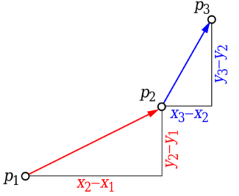

Geometrical and Network Flow Algorithms
Table of Contents
Orientation of 3 ordered points
Orientation of an ordered triplet of points in the plane can be
- counterclockwise
- clockwise
- colinear
Given three points p1, p2 and p3, find orientation of (p1, p2, p3).

The idea is to use slope. Slope of line segment (p1, p2): σ = (y2 - y1)/(x2 - x1) Slope of line segment (p2, p3): τ = (y3 - y2)/(x3 - x2) If σ < τ, the orientation is counterclockwise (left turn) If σ = τ, the orientation is collinear If σ > τ, the orientation is clockwise (right turn) Using above values of σ and τ, we can conclude that, the orientation depends on sign of below expression: (y2 - y1)*(x3 - x2) - (y3 - y2)*(x2 - x1) Above expression is negative when σ < τ, i.e., counterclockwise Above expression is 0 when σ = τ, i.e., collinear Above expression is positive when σ > τ, i.e., clockwise
#include <iostream> using namespace std; struct Point { int x, y; }; int Orientation(Point p1, Point p2, Point p3) { int val = (p2.y - p1.y) * (p3.x - p2.x) - (p3.y - p2.y) * (p2.x - p1.x); if (val == 0) { return 0; } return (val > 0) ? 1 : 2; // clock or counterclock } int main() { Point p1 = {0, 0}, p2 = {4, 4}, p3 = {1, 2}; int o = Orientation(p1, p2, p3); if (o == 0) { cout << "Linear"; } else if (o == 1) { cout << "Clockwise"; } else { cout << "CounterClockwise"; } return 0; }
Convex Hull
Jarvis’s Algorithm
Given a set of points in the plane. the convex hull of the set is the smallest convex polygon that contains all the points of it.

The idea of Jarvis’s Algorithm is simple:
- Initialize p as leftmost point.
- Do following while we don’t come back to the first (or leftmost)
point.
- The next point q is the point such that the triplet (p, q, r) is counterclockwise for any other point r.
- next[p] = q (Store q as next of p in the output convex hull).
- p = q (Set p as q for next iteration).
Time Complexity: For every point on the hull we examine all the other points to determine the next point. Time complexity is O(m * n) where n is number of input points and m is number of output or hull points (m <= n). In worst case, time complexity is O(n 2).
#include <iostream> #include <vector> using namespace std; struct Point { int x, y; }; int Orientation(Point p1, Point p2, Point p3) { int val = (p2.y - p1.y) * (p3.x - p2.x) - (p3.y - p2.y) * (p2.x - p1.x); if (val == 0) { return 0; } return (val > 0) ? 1 : 2; // clock or counterclock } void ConvexHull(Point *points, int n) { if (n < 3) { return; } vector<Point> hull; // Find the leftmost point int l = 0; for (int i = 1; i < n; ++i) { if (points[i].x < points[l].x) { l = i; } } // Start from leftmost point, keep moving counterclockwise // until reach the start point again. int p = l, q; do { hull.push_back(points[p]); // Search for a point 'q' such that orientation(p, q, i) // is counterclockwise for any other point i. q = (p + 1) % n; for (int i = 0; i < n; ++i) { // If i is more counterclockwise than current q if (Orientation(points[p], points[i], points[q]) == 2) { q = i; } } p = q; } while (p != l); for (int i = 0; i < hull.size(); ++i) { cout << "(" << hull[i].x << ", " << hull[i].y << ")\n"; } } int main() { Point points[] = {{0, 3}, {2, 2}, {1, 1}, {2, 1}, {3, 0}, {0, 0}, {3, 3}}; int n = sizeof(points)/sizeof(points[0]); ConvexHull(points, n); return 0; }
Graham Scan
Time Complexity: Let n be the number of input points. The algorithm takes O(nLogn) time if we use a O(nLogn) sorting algorithm.
Following is Graham’s algorithm
Let points[0..n-1] be the input array.
- Find the bottom-most point by comparing y coordinate of all points. If there are two points with same y value, then the point with smaller x coordinate value is considered. Let the bottom-most point be P0. Put P0 at first position in output hull.
- Consider the remaining n-1 points and sort them by polor angle in
counterclockwise order around
points[0]. If polor angle of two points is same, then put the nearest point first. - After sorting, check if two or more points have same angle. If two more points have same angle, then remove all same angle points except the point farthest from P0. Let the size of new array be m.
- If m is less than 3, return (Convex Hull not possible)
- Create an empty stack ‘S’ and push
points[0],points[1]andpoints[2]to S. - Process remaining m-3 points one by one. Do following for every
point ‘points[i]’
6.1) Keep removing points from stack while orientation of
following 3 points is not counterclockwise (or they don’t make a
left turn).
- Point next to top in stack
- Point at the top of stack
- points[i]
6.2) Push points[i] to S
- Print contents of S
Phase 2 (Accept or Reject Points): For remaining points, we keep track of recent three points, and find the angle formed by them. Let the three points be prev(p), curr(c) and next(n). If orientation of these points (considering them in same order) is not counterclockwise, we discard c, otherwise we keep it.

#include <cstdlib> #include <iostream> #include <stack> using namespace std; struct Point { int x, y; }; // A globle point needed for sorting points with the first point Point p0; // 0: colinear // 1: clockwise // 2: counterclockwise int Orientation(Point p1, Point p2, Point p3) { int val = (p2.y - p1.y) * (p3.x - p2.x) - (p3.y - p2.y) * (p2.x - p1.x); if (val == 0) { return 0; } return (val > 0) ? 1 : 2; // clock or counterclock } Point NextToTop(stack<Point> *stk) { Point p = stk->top(); stk->pop(); Point next = stk->top(); stk->push(p); return next; } int Swap(Point *p1, Point *p2) { Point temp = *p1; *p1 = *p2; *p2 = temp; } // square distance between p1 and p2; int DistSqure(const Point &p1, const Point &p2) { return (p1.x - p2.x) * (p1.x - p2.x) + (p1.y - p2.y) * (p1.y - p2.y); } int Compare(const void *vp1, const void *vp2) { Point *p1 = (Point *) vp1; Point *p2 = (Point *) vp2; int o = Orientation(p0, *p1, *p2); if (o == 0) { return (DistSqure(p0, *p2) >= DistSqure(p0, *p1)) ? -1 : 1; } return (o == 2) ? -1 : 1; } void ConvexHull(Point *points, int n) { // Find the bottommost point int ymin = points[0].y; int min = 0; for (int i = 1; i < n; ++i) { int y = points[i].y; if ((y < ymin) || (y == ymin && points[i].x < points[min].x)) { ymin = points[i].y; min = i; } } // Place the bottom-most point at first position Swap(&points[0], &points[min]); p0 = points[0]; qsort(&points[1], n - 1, sizeof(Point), Compare); // If two or more points make same angle with p0, // Remove all but the one that is farthest from p0 int m = 1; for (int i = 1; i < n; ++i) { while (i < n - 1 && Orientation(p0, points[i], points[i+1]) == 0) { ++i; } points[m++] = points[i]; } if (m < 3) { return; } stack<Point> stk; stk.push(points[0]); stk.push(points[1]); stk.push(points[2]); for (int i = 3; i < m; ++i) { while (Orientation(NextToTop(&stk), stk.top(), points[i]) != 2) { stk.pop(); } stk.push(points[i]); } while (!stk.empty()) { Point p = stk.top(); stk.pop(); cout << "(" << p.x << ", " << p.y <<")" << endl; } } int main() { Point points[] = {{0, 3}, {1, 1}, {2, 2}, {4, 4}, {0, 0}, {1, 2}, {3, 1}, {3, 3}}; int n = sizeof(points)/sizeof(points[0]); ConvexHull(points, n); return 0; }
How to check if two given line segments intersect?
Two segments (p1,q1) and (p2,q2) intersect if and only if one of the following two conditions is verified
- General Case:
- (p1, q1, p2) and (p1, q1, q2) have different orientations and
- (p2, q2, p1) and (p2, q2, q1) have different orientations.


- Special Case
- (p1, q1, p2), (p1, q1, q2), (p2, q2, p1), and (p2, q2, q1) are all collinear and
- the x-projections of (p1, q1) and (p2, q2) intersect
- the y-projections of (p1, q1) and (p2, q2) intersect

cc
INCLUDE: "./Files/" src c+